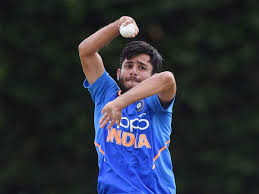
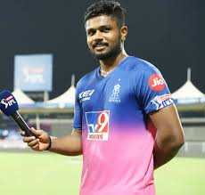

Kohli move to resign as T20 skipper after World Cup could affect India’s performance

Just 30 days ahead of the World T20 Cup in the UAE, when India should be focusing on getting its act together and finetuning things with the second half of the IPL giving it a perfect opportunity to do so, Indian skipper Virat Kohli has created uncertainty by tweeting that he is going to give up the captaincy for the shortest form of the game but only after the most important international ICC tournament of the year.
Kohli has tweeted that this is necessary considering the workload of captaining India in all three formats of the game while continuing to play the key role of being the premier batsman in the side. A point well taken but, surely, Kohli could have announced this months earlier so that India could have played the coming World T20 Tournament under the captaincy of Rohit Sharma who is the most successful IPL skipper, leading Mumbai Indians to five titles, as compared to none for the Royal Challengers Bangalore led by Virat.
Source: Times Of India
For more Info
Click here
Retired out in T20 cricket Contrasting view

In T20 cricket, the debate of retiring out the batsman who is looking
‘out of touch’ surfaces at times. In the ongoing editions of IPL, It’s
again the major talking point for some cricket experts and they have
been airing their views on Retiring out the batsman in case he is
struggling in the middle to score freely.
Premises
The recent example is Match no. 9 of IPL between Rajasthan Royals and
Kings XI Punjab. While chasing mammoth total of 223 Royals were in
driving seat till 8.3 overs despite losing Buttler early. Upon losing
Smith’s wicket Royals promoted Rahul Tewatia and he was given a chance
to bat at number 4. The promotion of Rahul surprised many but that’s
not the concern here. The issue is he was unable to set the stage on
fire initially and rather struggled to strike the ball and even rotate
the strike. The ghost of past came alive for Royal fans like Indian
fans faced in these instances; Jadeja in 2009, Vijay Shankar in
Nidahas trophy and Yuvraj Singh in 2014 WC final.
Contrasting View
In my view, the process of retiring himself out is dependent on the
batsman in the middle and onus is on him to decide. Let’s try to
understand the aspects he will have to consider in making that
decision. A batsman is part of playing eleven for some reason and is
sent in middle on a particular position to play a role, he might not
deliver straight away and might struggle. But such is the game!
Experts can analyze and dissect the skill set but not the mindset. And
that’s the KEY. Regarding a bowler who is not in rhythm or not hitting
the right lengths or not bowling to the field, he is usually
under-bowled in case the captain has the luxury of having extra
bowler(s). And a fielder who is having an off day can be moved from
his specialized position and the option of substitute fielder is also
available. In both the cases of bowler & fielder, it is the captain’s
call and he has all the rights to do the changes and the players are
bound to adjust knowing it’s the essence of team sport. The bowler &
fielder aren’t supposed to let it affect their confidence as the
decisions are made by the captain (& somewhat management) in the
interest of the team and keeping the larger picture in mind.
Source: Times Of India
For more Info
Click here
IPL – Week 1 – Young stars who have caught the attention

The Indian Premier League (IPL) 2020 is up and running & has given
people an avenue to divert their attention from the gloom of pandemic
that has descended this year. Though spectators are not allowed on the
ground in this year’s edition, according to media reports, as per
estimates of BARC (Broadcast Audience Research Council) 20 crore
people watched the tournament opener between the Mumbai Indians and
Chennai Super Kings. One week and 7 matches down here are some of the
young guns who have caught my attention and I am sure there will be
many more as the tournament progresses.

Ravi Bishnoi ( KXIP): Ravi Bishnoi was one of the stars
of India’s U-19 World Cup campaign in South Africa, earlier this year.
What has struck the most about him is not only his control over the
variations that he possess but also the temperament with which he bowls.
In the game against RCB, he was called to bowl inside the powerplay and
was taken to cleaners by AB de Villiers but how he came back to pick up
3 wickets was commendable. In two matches played so far, Bishnoi has
picked up 4 wickets at an economy rate of less than 7 runs per over.
With a mentor like Anil Kumble in the dugout, Bishnoi looks set for a
bumper IPL.

Sanju Samson (RR): At 25, Sanju has already played 150
T20 matches but when it comes to playing for India he hasn’t got enough
opportunities. The way he decimated the CSK bowling attack at Sharjah
was pleasing even to the most ardent purist of the game. If he continues
the kind of form shown in that one game, not only will RR do well this
season, but it will be difficult for the national selectors to ignore
him.
Source: Times Of India
For more Info
Click here